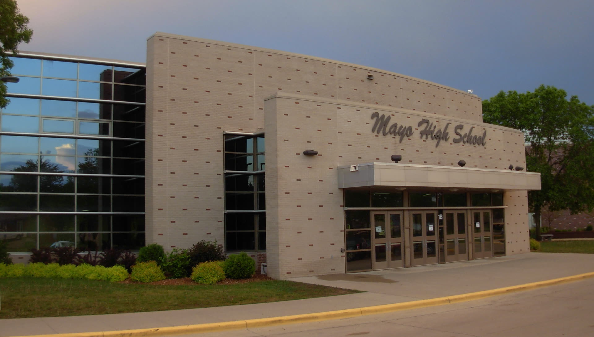

About Mayo ASA
Built to do more than the club fair table suggests.
Here's what we're actually trying to build, why it's shaped this way, and where the idea came from.
Our mission
Build an organized Asian American, Pacific Islander, and Desi student community at Mayo — while advancing education, representation, equality, and constructive civic engagement.
Many students are searching for a real sense of belonging and a way to connect over shared roots, especially since our school lacks any Asian language or cultural classes. While our school already has a vibrant network of culture clubs, an ASA fills the missing gap—giving Asian students and allies a dedicated space to celebrate identity while serving as an ambitious engine to tackle real-world issues, like raising funds for disaster relief overseas.
Wilson Wang, Founder
Why not just a cultural club?
Cultural clubs are valuable — food, festivals, and performance matter. But Mayo ASA was founded by Wilson Wang, alongside Chen Liang, Kevin Wang, and Nathaniel Yuan, around a bigger idea: a club that also does the work of understanding and changing the community around it, not just celebrating it.
That's why the club stands on three equal pillars instead of one. Community gives people a place to belong. Education gives that community real context — Asian American history, immigration, discrimination, representation, current issues, and the many distinct cultures and histories the word "Asian" gets flattened into. Advocacy is what turns understanding into action: identifying real problems, collecting evidence, working with administrators, and partnering with other student organizations toward concrete change. That third pillar is what makes Mayo ASA substantially more ambitious than a typical cultural club.
Coalition, not competition
Mayo ASA is explicitly not built to be "anti" anyone. We don't see other identity-based or equity-focused clubs as competitors for attention or resources — we see them as the organizations most likely to become our closest collaborators.
Groups like the Equity Team and Global Affairs are doing work that overlaps with ours in important ways: minority representation, civil rights history, immigration and identity, and how stereotyping shows up differently across communities. We'd rather build those bridges early than accidentally build walls. More on how that plays out on our Collaborate page.
Advocacy doesn't stop at campus
If advocacy means turning understanding into action, the most concrete action we can imagine is showing up for people in crisis. Mayo ASA is running a fundraising initiative for Nepal flood relief, supporting communities recovering from the flash floods that hit Nepal in August 2026 — real relief, not just awareness.
This isn't a separate club bolted onto ASA — it's what the advocacy pillar looks like at full scale. The same skills that go into campaigning for a change at Mayo — identifying a real problem, gathering evidence, finding the right partners, and following through — apply just as well to raising funds for disaster relief overseas. Full details, and how to get involved, live on our Global Impact page.
Want the details?
See exactly what each pillar looks like in practice.